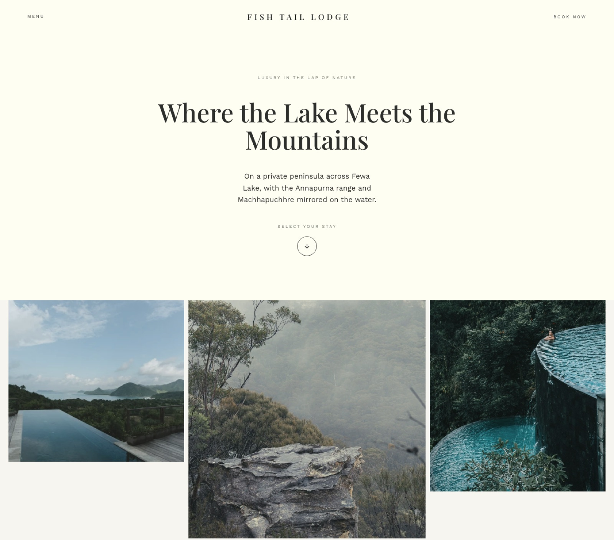
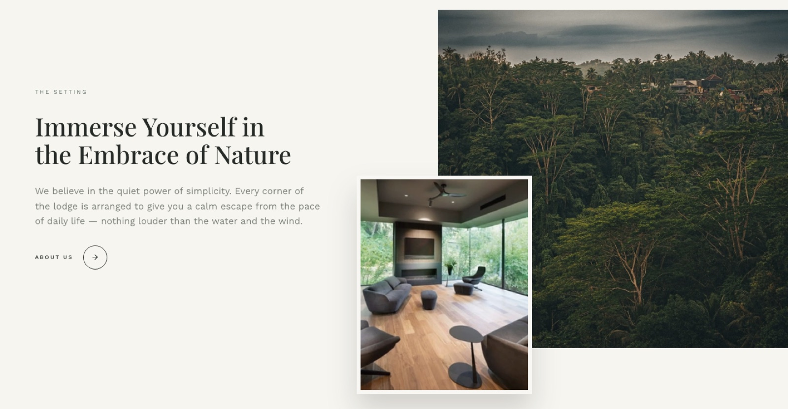
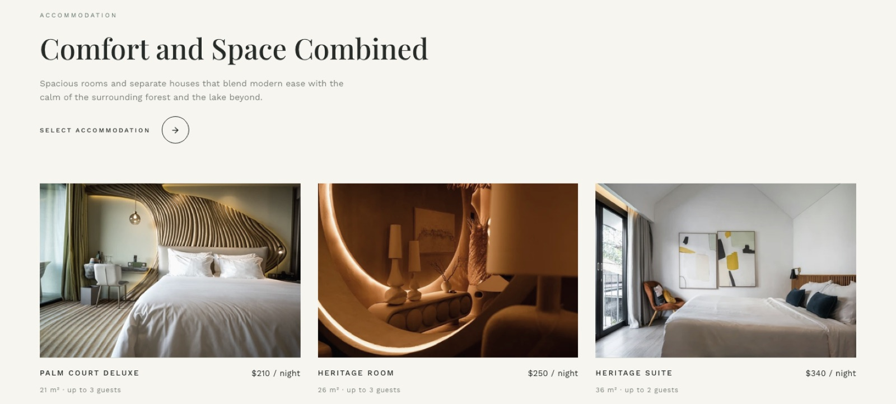
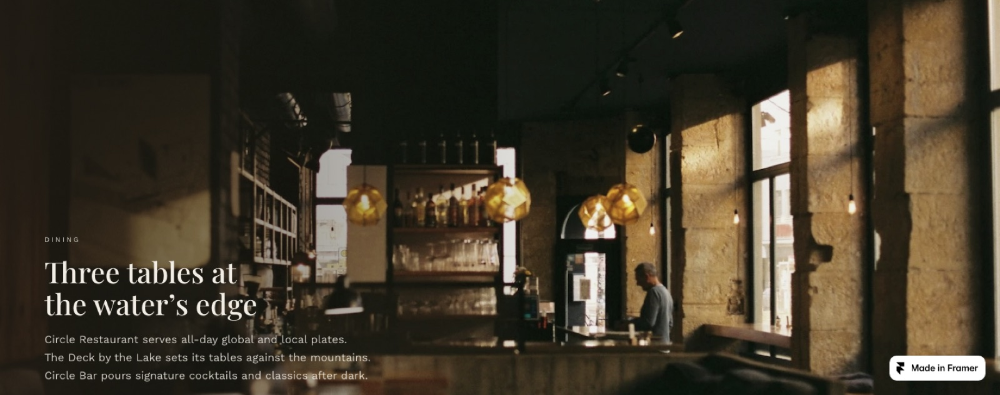

← Portfolio ( Case study — 03 )
Where the lake meets the mountains.

The brief
Fish Tail Lodge sits on a private peninsula across Fewa Lake, with the Annapurna range and Machhapuchhre mirrored on the water.
The lodge wanted a website as quiet as the place itself — and more guests booking direct, instead of through travel sites.


Approach
(03)- 01
Slow reading
Cream paper backgrounds, a classic serif and wide spacing set a pace closer to a lakeside morning than a booking engine.
- 02
Place first
Landscapes, rooms and the restaurant at dusk are given room to breathe — the photography does the selling.
- 03
Book in two taps
Clear room cards with nightly price and capacity, and ‘Book now’ always within reach on every screen size.

Outcome
Built in Framer, the site is now updated by the lodge team themselves — new rooms, seasonal menus and offers, without a developer.